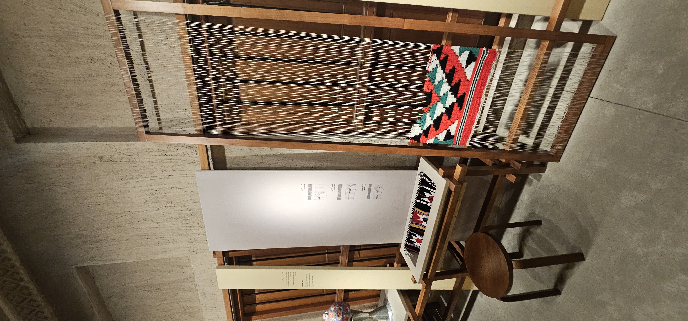

Le chant des cigales
Quand chantent les cigales,
le temps suspend son vol.
Le soleil ouvre les yeux
sur les collines endormies,
et la lumière,
comme une caresse,
glisse sur les pierres anciennes,
embrasse les oliviers
et dore les chemins de poussière.
Le vent porte une musique
que mon cœur n'a jamais oubliée.
Chaque stridulation est une clé
ouvrant les portes de mon enfance,
là où les jours
semblaient éternels
et les bonheurs tenaient
dans un sourire.
Je revois la rivière,
fraîche complice de nos étés,
où nos rires éclaboussaient les galets.
Je retrouve le pas tranquille de l'âne
qui nous emmenait sur les sentiers,
au rythme paisible des vacances.
Je revois mon grand-père,
debout avant le soleil,
nous appelant d'une voix dure
pour aller chercher le pain
encore chaud
chez l'unique boulanger du village.
Le parfum du pain fumant
se mêlait déjà à celui du thym
et de la terre chauffée.
Puis vient l'image de ma grand-mère,
assise au milieu de la cour,
un panier de pain entre les mains,
une assiette d'huile d'olive à ses pieds.
Elle trempait chaque morceau
avec l'amour des femmes simples,
et nous faisions la queue,
impatients,
comme si ce pain était un festin de roi.
Je revois les figuiers généreux,
leurs branches courbées sous les fruits,
nos mains collantes de sucre,
nos poches pleines de trésors
volés à l'été.
Et mon frère...
avec ses ruses d'enfant,
ses éclats de rire
et ses taquineries sans fin.
Sur le moment,
elles m'agaçaient ;
aujourd'hui,
elles me manquent
comme une chanson
que l'on ne cesse de fredonner.
Quand la nuit tombait,
le village s'habillait de lumière.
Les mariages,
les circoncisions,
les chants,
les youyous,
les tambours,
les danses qui repoussaient l'aube,
et les étoiles qui semblaient
danser avec nous.
Aujourd'hui encore,
lorsque les cigales
élèvent leur concert,
ce n'est pas seulement
l'été qu'elles annoncent ;
elles réveillent
les visages aimés,
les voix qui se sont tues,
les mains qui nous ont nourris,
les instants que le temps
n'a jamais pu effacer.
Car les cigales ne chantent pas
seulement dans les arbres ;
elles chantent aussi
dans la mémoire,
là où l'enfance demeure éternelle,
à l'ombre des oliviers
et sous le soleil
de nos plus beaux souvenirs.
Djamel Metref
At Yenni le 1 Août 2026
← Tous les poèmes
Le chant des cigales
Mémoire et transmission · Beauté du quotidien